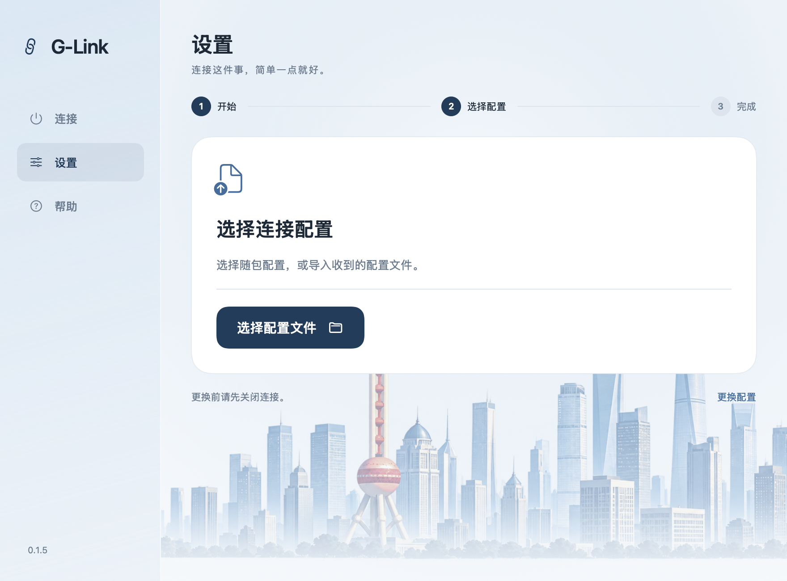
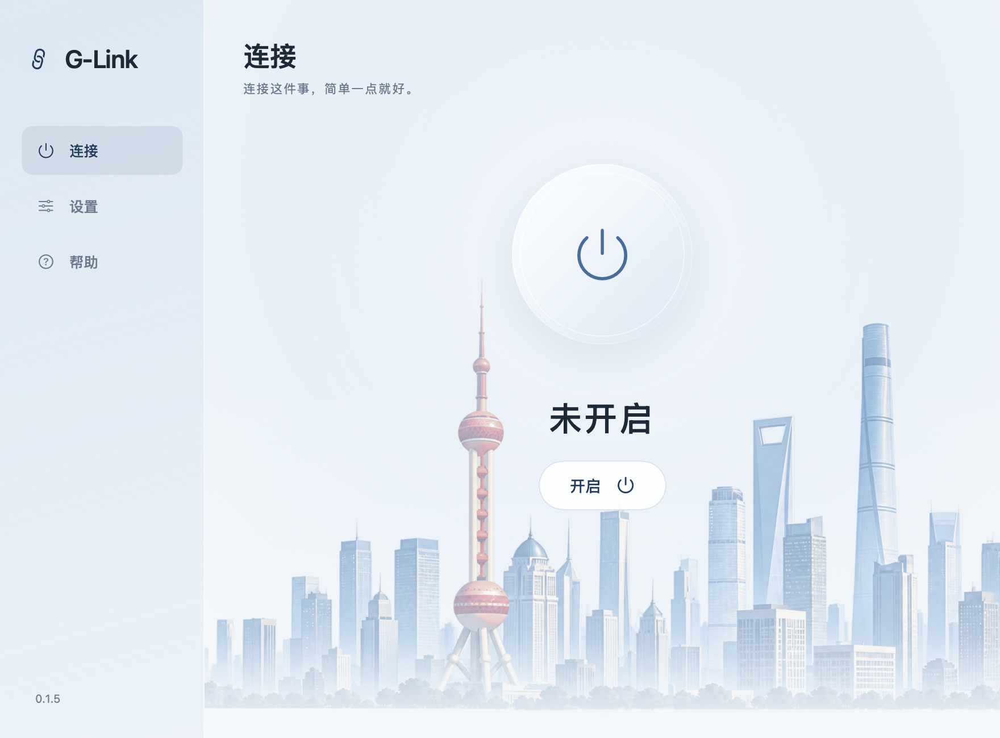
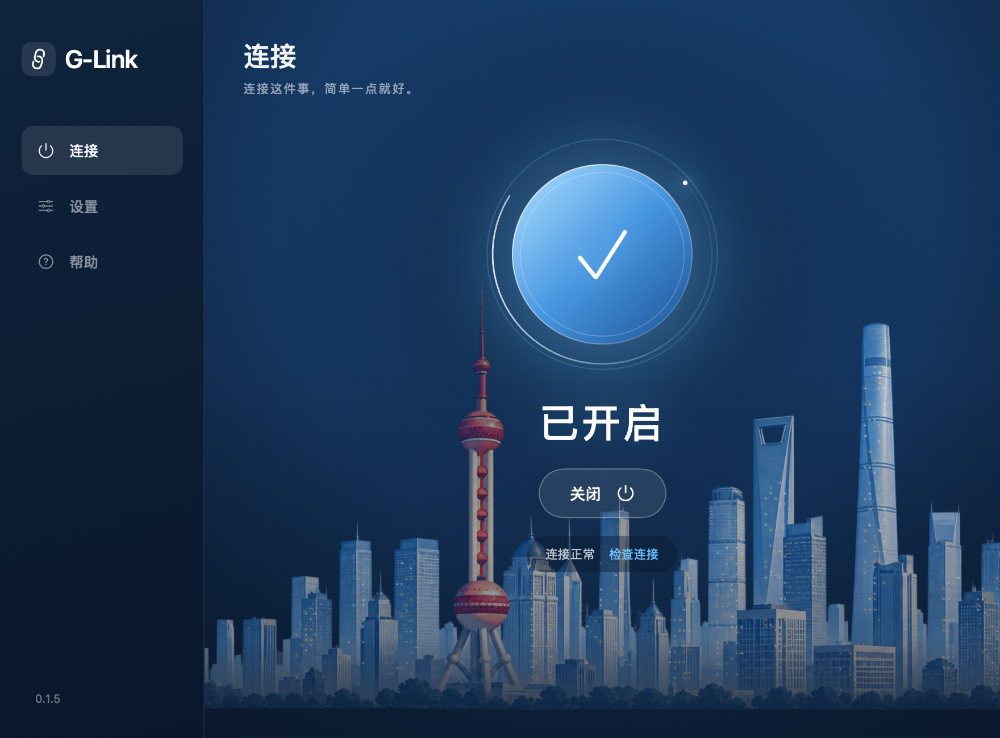

先完整解压
双击 ZIP，打开解压后的文件夹，再打开「G-Link.app」。不要直接在压缩包里运行，也先不要只移动应用。
YOUR CONNECTION, SIMPLIFIED
首次设置，然后开启。
用完关闭即可。
先记住这一件事
开启使用，关闭恢复。
应用自带连接程序。无需 Homebrew、Python，
也不需要在终端输入安装命令。
A QUICK WALKTHROUGH
下面使用实际应用界面生成的演示图。可以暂停，也可以点选步骤。这里的点击只切换教程，不会修改你的电脑。



首次设置：选择维护者提供的连接配置。
01 / FIRST TIME
私人分享包中通常有G-Link.app、连接配置.qinglink 和这份教程。公开版不含可用的私人节点配置。
双击 ZIP，打开解压后的文件夹，再打开「G-Link.app」。不要直接在压缩包里运行，也先不要只移动应用。
点击「开始设置」。如果有「使用随包配置」，直接选它；否则选择收到的 .qinglink 文件。看到准备完成即可。
设置完成后，可点「添加到应用程序」。以后从那里打开G-Link；也可以把应用拖到 Dock。配置已保存在本机。
这个版本使用本地签名，没有 Apple Developer ID 公证。系统首次允许打开后，应用才能运行。
之后开启或恢复代理时，macOS 可能要求输入管理员密码，这是授权修改网络设置。G-Link不保存密码。授权可能再次出现，不保证只输入一次。
请向分享者获取 连接配置.qinglink。它不是应用密码，也不是需要你填写的一组服务器参数；直接导入即可。
应用仅支持这个工具包使用的 sing-box JSON 配置格式。首次版本不支持直接导入订阅链接或 Clash YAML。
02 / EVERY DAY
关闭窗口后，应用仍在菜单栏运行。点击菜单栏的G-Link图标，可以重新显示窗口、关闭或退出。
| 你想做什么 | 怎么操作 | 会发生什么 |
|---|---|---|
| 开始使用 | 打开G-Link → 开启 → 按提示授权 | 启动连接程序，并设置系统代理。 |
| 打开 ChatGPT 或浏览器 | 正常打开应用；已打开的可用 ⌘Q 退出后重开 | 遵循系统代理设置的应用会使用连接。 |
| 用完了 | 点击「关闭」 | 先恢复原网络设置，再停止连接程序。 |
| 退出G-Link | 菜单栏选择「退出G-Link」，或按 ⌘Q | 如果代理仍开启，会先恢复网络；请完成系统授权。 |
| 更换连接配置 | 先关闭 → 设置 → 更换配置 | 校验成功后才替换原配置，失败不会覆盖。 |
如果之前装了 Omega，请选择“系统代理”。旧工具包的 02、06 和G-Link不要同时开启；首次迁移前先运行旧包的 04，再打开G-Link。
03 / A LITTLE HELP
先看提示，通常只需要一步。不要反复打开多个代理软件。
先关闭其他代理软件。如果还运行着旧版 sing-box 工具包，双击旧包里的「04-停止代理.command」，再回G-Link开启。G-Link不会强行结束其他软件。
点击「检查连接」。如果外网测试失败，先确认 Wi-Fi 能正常访问普通网站，再联系维护者检查节点。如果检查通过而某个应用不通，完全退出并重新打开该应用；仍不通时需要检查应用是否遵循系统代理及目标服务是否接受当前线路。
修改系统网络设置需要管理员授权。请在 macOS 的系统授权窗口输入，不是在连接配置里填写。取消授权不会完成操作；关闭时若取消恢复授权，应用会保留连接和恢复记录，方便重试。
重新打开G-Link，点击「恢复连接」，按提示授权。突然断电或强制结束时，应用可能来不及恢复设置。备份保存在你的应用数据目录，恢复完成前不要删除。正常退出应用会先执行恢复。
先点击关闭并确认恢复成功，再退出、删除G-Link.app。如果要同时删除私人配置，可通过应用“帮助 → 打开日志”找到数据目录，确认已经没有 network-backup.plist 后再删除该目录。
连接配置可能包含私人服务器地址和认证信息。请只发给约定的使用者，不要上传公开仓库或贴在公开截图里。图文教程和公开源码包不包含这些配置。